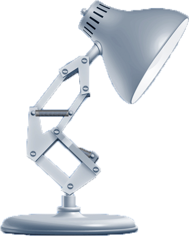
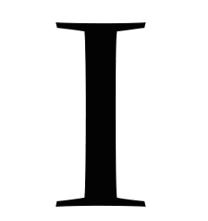
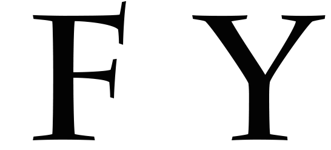

The Problem
A long, long time ago (in the summer of 2014), when I did everything in my stylesheet, I came across a peculiar problem. I wanted to use CSS3 to give a ball object the effect of bouncing in accordance with the natural laws of physics. I scoured the internet for some way to breathe gravity into this ball. After hours looking through StackOverflow and CSS docs, I had found a few options, though I remained unsatisfied. Using JavaScript and JQuery would be excessive and inefficient for such a minor task that should be easily solvable with the existing animation options in CSS3. I first tried using the ease-in/out transitions that CSS provides, and while these appeared smooth, it was very difficult to attain a feeling of natural acceleration, and each new bouncing object would need an entirely different function found through extensive trial and error. Many sites I visited suggested an unwieldy keyframe function to time each bounce. These functions appeared verbose and redundant in code. What's more, the created effect still appeared choppy and unprofessional.
The Solution
Finally, I began experimenting with a cubic-bezier curve, though all the sample functions I found were slightly off. Still, this was the closest I had come. I started from scratch, spending hours of trial-and-error to fine tune this versatile function, until finally, something just clicked.
To easily implement this, first define your bounce animation by set the overall position change of your object using a keyframe function (for non-modern browser compatability, see stylesheet for this page):
@-webkit-keyframes bounce {
from, to {
bottom: [bottom_of_bounce_location]px;
height: [squished_height_at_bottom_of_bounce]px;
}
80% {
bottom: [top_of_bounce_location]px;
height: [full_height_at_top_of_bounce]px;
}
}
Next, calculate the duration needed:
duration_per_bounce ≈ (((top_of_bounce_location) - (bottom_of_bounce_location))/125)
Then, by adding just one CSS3 transition/timing to your stylesheet, you may give your bounce animation the effect of accelerating under a gravitational force:
#OBJECT-TO-BOUNCE {
-webkit-animation: bounce [duration_per_bounce] cubic-bezier(0.30, 2.40, 0.85, 2.50) infinite;
}
Examples
Here a few potential ideas of what you might "gravify" to add a special flair to your website in just a couple minutes. Feel free to copy the CSS from this page's stylesheet to implement these effects on your own!
Alert Messages
The bouncing effect has a very practical use in websites as a means to accentuate a notification or alert. Here, we see an unread message alert for an online email client:
Bouncy Ball:
This implementation shows a typical object acting under the effects of gravity. The bounce animation, which is really just a specially-timed translation, may also be paired with other effects. In this example, we see a rotation, and a slight height transformation to add the illusion of elasticity. The shadow simply scales concurrently with each bounce using the same magical cubic-bezier curve.
Squish Effect:
This effect might look rather complicated, but it uses the same functions that all the other examples on this page use. The letter "I" transforms and the lamp bounces with the exact same cubic-bezier curve. This simultaneous animation makes the lamp seem to squish the "I".


